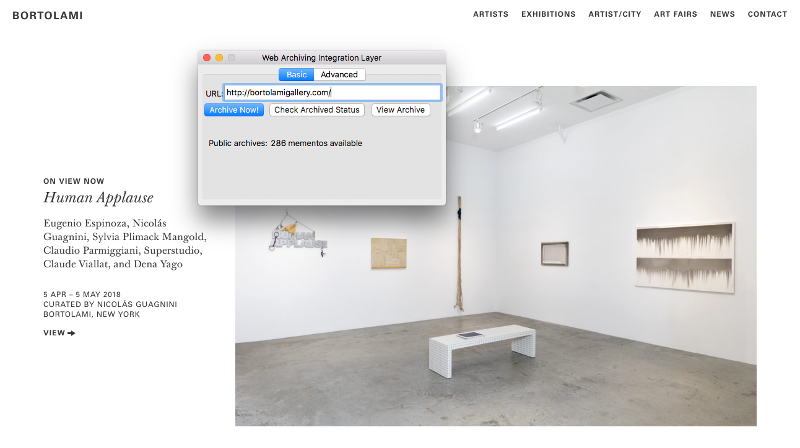

Web Archiving and Art History
Archive-It is the tool most used by libraries and museums to create curated web archives. It offers support, connection to other institutional web archival collections, storage, and an all-in-one functionality.
But what if you’re interested in creating a web archive on your own, your institution can’t afford subscription-based tools, or you simply want to explore what’s out there? Luckily there are many free options for web archiving, many of them also open-source and extensively documented, and you don’t have to be a tech genius to figure them out. You do, however, need to be familiar with the steps taken to archive a website. If you’re brand new to web archiving, check out my process page before diving in on your own.
To explore the viability of these tools, I chose a website already archived by an institution using Archive-It, and compared my freely-acquired results with theirs. The experiments below will give you a just a taste of the possibilities and difficulties in web archiving, and hopefully encourage you to experiment on your own.
NYARC has been archiving the website of the Bortolami Gallery since 2014. Archive-It uses a combination of tools, including brozzler and youtube-dl, to crawl pages and save them as WARC files. Looking at NYARC’s latest capture of the gallery website on March 28th, 2018, it appears that all internal links and files on the site have been captured. The pages for each artist are accessible, and the PDFs attached can be downloaded.
It stops short of saving their social media sites linked to at the bottom of each page, however. This is because Archive-It allows you to have control over scoping - it appears the archivist decided to not save those pages in this particular instance.
Of course, the easiest way to get involved is to contribute to existing web archives. The Internet Archive offers the “save page now” button that allow you to activate a crawl with one click.
You can also save pages to the Wayback Machine using their:
The downsides?
Webrecorder is a part of a suite of web archiving software developed by Rhizome. Learn more about their web archiving efforts on our projects page. Once you’ve established a free profile, you can record, store, and replay versions of websites.
Rather than crawl a website by automatically following all possible links, Webrecorder records the actions you take in your browser. This allows you to target specific pages, files, and media on a site, including those that would otherwise be unfindable or difficult to capture. This makes Webrecorder a great tool for saving audiovisual, password protected, or form driven content as the scope is determined simply by the paths you take.
It does, however, involve a lot of clicking on your part.
Should you find you want to add pages to a recording session, you can try to “patch” a capture later, but I found it easier to try to capture everything I wanted all at once. Each capture can be named and added to your collections, which can be made private or public. You can also download the WARC files of the sites you capture and save them yourself.
WARCreate is another Google Chrome extension option for archiving websites. It allows you to generate WARC files from the websites you visit. However, I couldn’t get it to work! I suspect being an open-source Google Chrome browser extension created and maintained mainly by one person (Mat Kelly) is a part of the problem - Chrome is updated very frequently, so ensuring an extension’s compatibility with these updates involves serious maintenance. Its github page does mention that it has gone through various release and retraction periods, so I look forward to trying it again in the future.
WAIL, or Web Archiving Integration Layer, is another tool built by Mat Kelly, and more of an all-in-one application. It uses Heritrix to obtain WARC files. Again there are signs that its ongoing development is the mostly the work of one person rather than many - upon downloading it it prompted me to install Java 7, which has reached its end of life. I was, however, able to use Heritrix through the application to obtain a WARC file of the gallery website.
Having a GUI made it simple and straightforward to grab the file, but upon replay not all of the links I would have wanted to save had been captured. There are ways to monitor your crawl while it’s happening (under the 'advanced' tab), but I was unable to figure out a way to control the scope through this application.
I am still a beginner when it comes to using the command line, but wanted to explore one of the more advanced option for obtaining WARC files. With technical assistance (many thanks to Henry Snow!), I tested out Squidwarc. Squidwarc is an archival crawler alternative to Heritrix that aims to be slightly easier for the personal archivist to use. Like brozzler, it remotely controls a browser to crawl through pages.
To install and use you must be running macOS or Linux, and be comfortable installing and running programs using the command-line. Because it is a command-line based tool, you can easily schedule regular crawls once you’ve defined them.
Once you’ve installed the software, you can prompt it to open a browser window by executing the “run-chrome.sh” script. In a new terminal window, you can open your config file and indicate whether you’d like to crawl just one page, the page and all same domain links, or the page and all links. For my first capture, I chose a depth of 1, which tells the crawler to capture files one link away from the main seed. As I thought this would not be sufficient to fully capture the site, I gave my next crawl a depth of 3.
Once you’ve edited your scope, you can execute the “run-crawler.sh” script, and the program will crawl through the site indicated within the parameters you set in your config file.
The second capture took significantly longer as the crawler had much more to process. In the end I obtained WARC files of the site, each reflecting the different scope I outlined. My first crawl, with the depth of 1, produced an 18 MB WARC file, while the second crawl produced a 323.2 MB WARC file.
Most options for playing back WARC files are some version of the Wayback Machine. Pages saved using Archive-It can be viewed through the Wayback Machine. Links to other captures in the Internet Archive of the website are linked to in the top header.
These are just a few of many tools you can use to acquire and replay websites, not to mention the many storage, metadata, and automation options that are currently being developed. If you are tech-savvy, you can explore many more advanced, command-line based tools, or even modify open-source software to create your own custom tools.
For someone with fairly limited technical experience, experimenting with web archiving proved to be a frustrating experience overall. I can understand why people pay for technical support and the convenience of built-in storage and access. Should you decide to use some of the more advanced free options like Squidwarc, you should be comfortable using the command-line and have a robust and collaborative relationship with your IT department.
The free tools I explored were really created to support personal archiving, and may not scale well to the institutional level depending on how much you want to save. Additionally, I faced some problems with the smaller open-source software projects, as some had lost momentum and were not updating as fast as Chrome or Java. Cutting-edge projects can provide you with alternative methods for capturing WARC files if tools like Heritrix are not sufficient for your purposes, but it is hard to know how viable tools like WARCreate, WAIL, or Squidwarc will be in the future.
That’s not to say that all open-source software is unviable - the tools developed by the Internet Archive are resoundingly successful as there is a large buy-in and a committed developer community working with these tools and suggesting updates as necessary.
If you are planning a large-scale, long-term, or potentially difficult project, the support of Archive-It will probably make it your best option. I may have been able to acquire and play back pages, but figuring out quality assurance, automation and streamlining of the process, storage and maintenance, and how to provide access would have been difficult. It would likely involve cobbling together and maintaining multiple tools and programs. Archive-It provides access alongside other potentially similar collections, stores copies of your data for you, and all steps of the process are essentially contained within one service. Its biggest advantage over the simple browser based options? - YOU have fine-grained control over scoping, and once you’ve set up a crawl, you can repeat it at a certain frequency.
As an alternative, I found Webrecorder to be a fantastic and easy way to archive. While it’s not as automated as crawler-based options, it offers control over the scope, a simple framework for collection organization, and access to raw data. It also avoids many of the common pitfalls associated with web archiving, and I was easily able to navigate it without technical assistance.